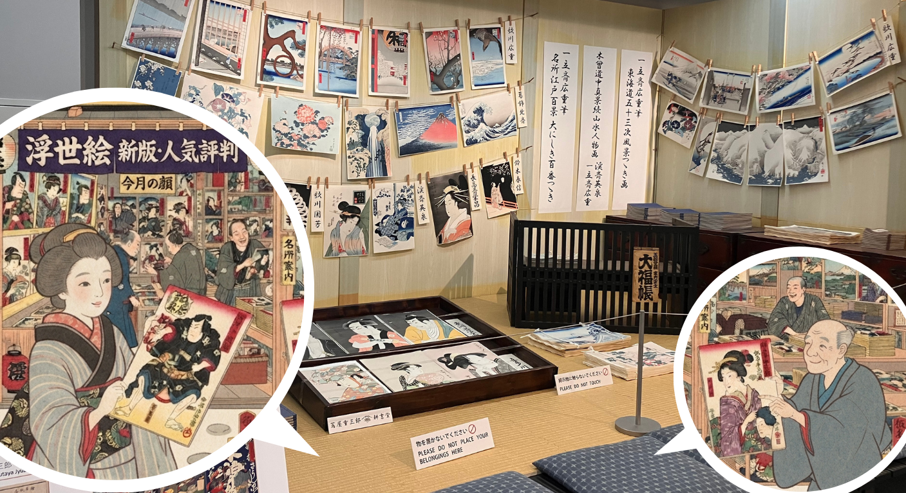
「絵草紙屋（＝浮世絵の販売店）再現コーナー」（中山道広重美術館内）」
浮世絵とは？
浮世絵は、江戸時代を中心に発展した絵画・版画のジャンルです。人物、風景、物語、流行など、当時の人々が楽しんだ「今」を題材にしました。
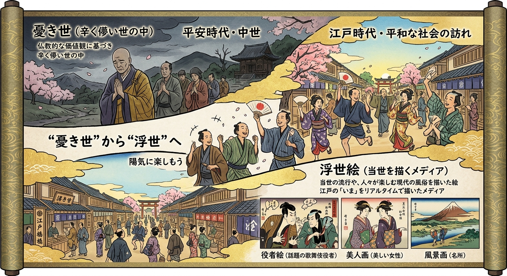
知っておきたい浮世絵師
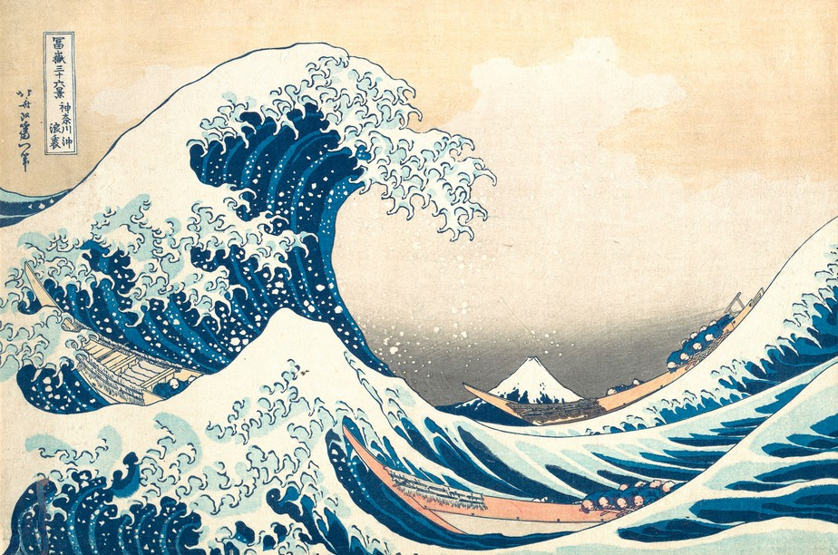
葛飾北斎 (KATSUSHIKA HOKUSAI)
大胆な構図と力強い表現で知られる浮世絵師。
一言コメント：死ぬ瞬間まで絵の向上を追い求め続けた絵への情熱からくる、圧倒的な描写力は必見でございます。
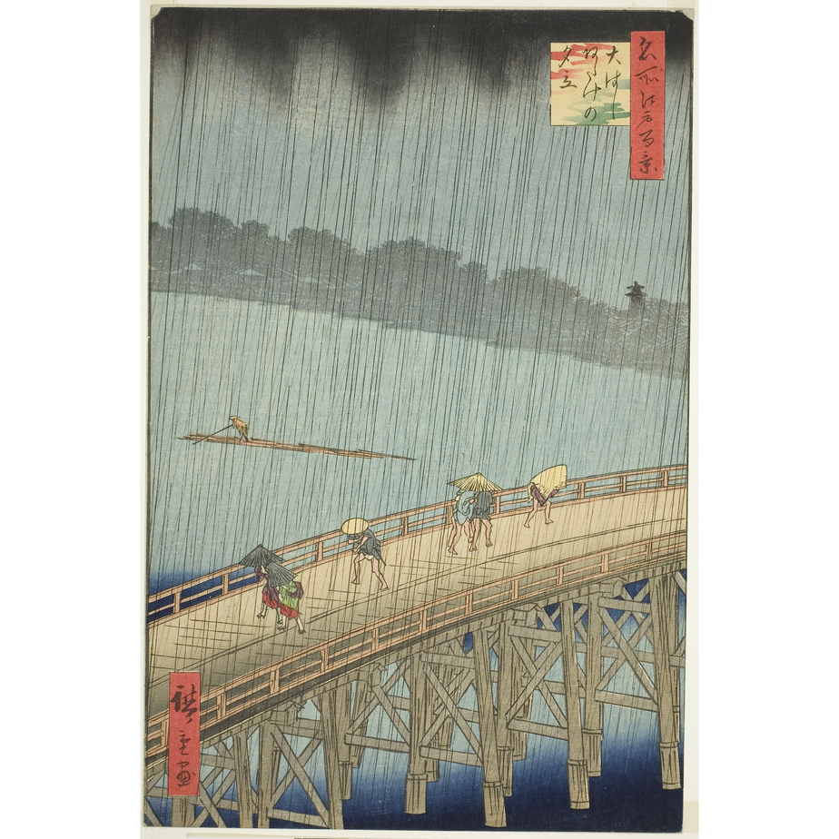
歌川広重 (UTAGAWA HIROSHIGE)
風景を美しく描いた名所絵で知られる浮世絵師。
一言コメント：単なる風景だけでなく「自然の空気感と旅情」まで描写している点に注目でございます。
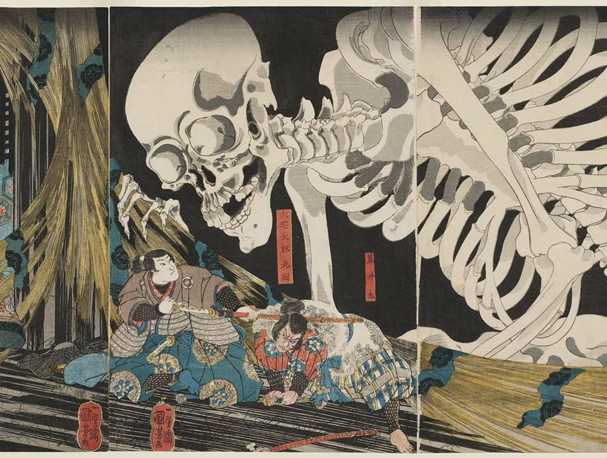
歌川国芳 (UTAGAWA KUNIYOSHI)
ユーモアや奇抜な発想を取り入れた作品で人気を集めた浮世絵師。
一言コメント：規格外の発想力と抜群のエンタメ性で描く動物や妖怪は、自由でポップなセンスが大爆発でございます。
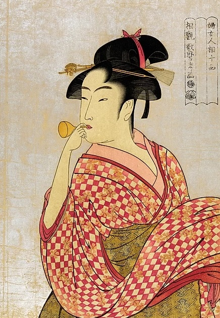
喜多川歌麿 (KITAGAWA UTAMARO)
女性の美しさを描いた美人画で知られる浮世絵師。
一言コメント：「女性を世界一美しく描いた浮世絵師」。女性の内面や感情まで描き出す描写力、線の美しさと色遣いは必見でございます
浮世絵のここが面白い
気になる項目をクリックすると、画像と詳しい説明が開きます。もう一度クリックすると閉じます。キーボードでも操作できます。
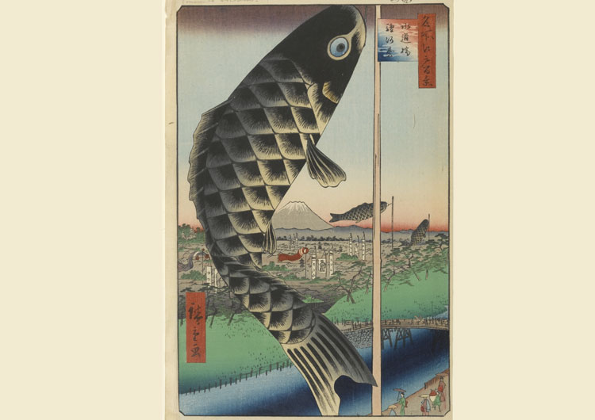
大胆な構図
画面の一部を大きく切り取ったり、斜めに配置したりすることで、見る人の視線を強く引きつけます。遠近感や余白の使い方も、現代のグラフィックデザインに通じる面白さがあります。
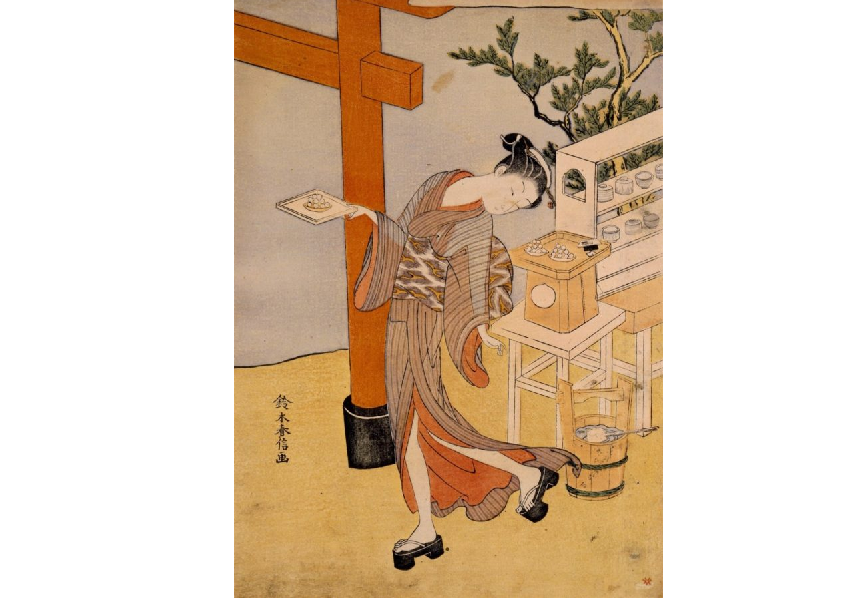
限られた色の組み合わせ
使える顔料や版の制約がある中で、少ない色を効果的に組み合わせ、画面全体の印象を作り上げました。色数を絞るからこそ生まれる統一感も魅力です。
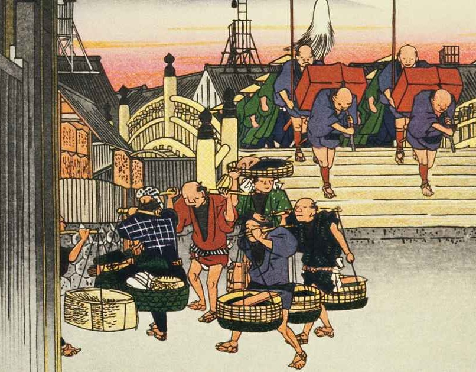
江戸時代の暮らしが分かる
浮世絵には、服装、食事、仕事、町の風景、流行など、その時代の人々の生活が描かれています。絵を見ることが、当時の文化を知る入口になります。
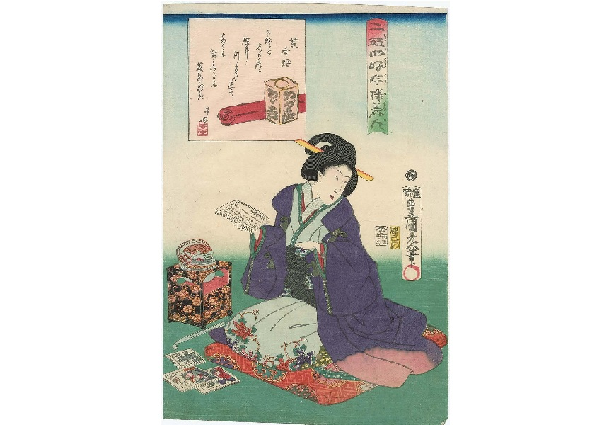
現代のデザインにも通じる表現
大胆なトリミング、平面的な色面、繰り返しのパターン、タイポグラフィのような文字表現など、現代のポスターやイラストにも通じる要素が見つかります。
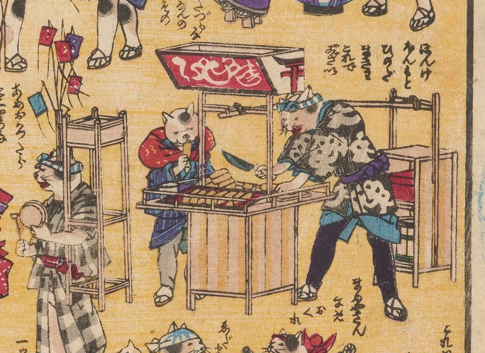
動物の擬人化
動物たちが、人間と同じように酒を飲み、商売をし、お洒落を楽しむなどの姿は滑稽でありつつ愛らしく、人間味あふれるユーモアを感じます。